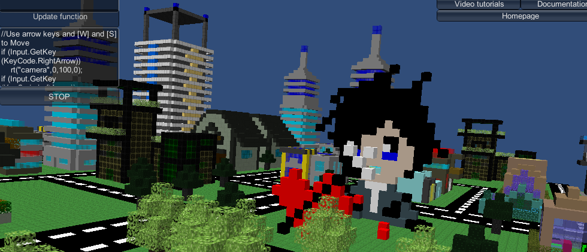

About 3dpl

3dpl is an educational real-time interpreted, voxel based programming environment meant to teach programming to beginners. .— specifically 3D game programming
Start new web 3dpl now!
News
October 5, 2026 — 3dpl web beta 1 is out! Features:- all new 3dpl web engine!
- use ours or host your own 3dpl.
- share games thru the web.
- works on mobile devices.
- 3dpl's source code is finally released!!! (under the GPL and LGPL licensees). go download it here
- Bug that prevented 3dpl from running on Mac is finally REALLY fixed!!! (sorry it took so long!).
- Added Audio/Music and Sound functions. See documentation for details on how to use it.
- Helicopter Flight Simulator 3 and Car Simulator 5 now have music and sound effects.
- Added many audio test programs, they demonstrate how sound should work.
- Added Functions to change the sky. See documentation for details on how to use it.
- Put an about button on main menu.
- Map editor. This allows you to make Map terrains using Objects made in the Object editor.
- There is a beautiful map of "Fox city".
- Made a car driving simulator program. It goes around Fox city.
- Made a helicopter flight simulator program. It goes around Fox city.
- There is a partially made example of how to make a game like Doom in 3dpl (DUNGEON 3).
- Map() function to render maps made in the map editor.
- A teleport option that also displays the current X Y and Z of the camera.
- You can now save Objects in obj format (it is faster than XML).
- Obj() function to render obj objects.
- Can now import and export to XML.
- Made a main menu that allows you to access the seperate parts of 3dpl ge.
- The program in now divided into 3 parts, Game Mode, for users that just want to play games (not available yet); Creative mode, for artists to make Objects and Maps; and Programming mode, for developers.
- sr() function, that sets the rotation of an object in degrees.
- Collider block collision detection, and 2 functions that handle that (see documentation for details).
- Now there are seperate folders for Programs, Objects, Textures and Maps.
- Much improvement in the usability of the Object Editor. too many features to go into detail. Just try it now!
- Important bug fix: fixed bug in Unique ID for the cubes that was causing some cubes to have the same unique IDs.
- Added feature: allowed for some specific optional collision detetion inside the Object Editor.
- Now you can move the cursor and the camera using the mouse!
- You can roll the camera
- You can stabilize the camera when it is facing in a weird angle
- Colors are now handled properly, you can turn off the guide
- New feature: Teleport to point of origin
- Object editor — you no longer need to write code to make objects that are composed of many blocks.
- Textures — you can now put pictures on your blocks. You can tile the same picture on every side of the cube or draw 6 pictures so that each side of the cube has a different image.
- Alpha channel support — you can now make your blocks transparent
- Corrected bug in collision detection
- Added support for alpha channel changes (transparent cubes)
- Added first loops video tutorial (more video tutorials to come!)
- Debug information
- Maximizing/Minimizing the code window
- Example 18 — A first person 3D platformer
- Proper Load and Save dialogs
- MessageBox
- InputBox
- Camera collision detection with cubes
Official IRC channel
The official 3dpl channel is #3dpl now on irc.libera.chat Click here to access from your web browser and join #3dpl, or download an IRC client.
The 3dpl team
- Usmar A Padow (main developer and project manager)
- Greg Cox (Contributed to program)
- Patrick Robotham (Contributed to program)
- Kindland (who though does not want recognition has been the artist)
- Daniel Foerster (Designed this web site)